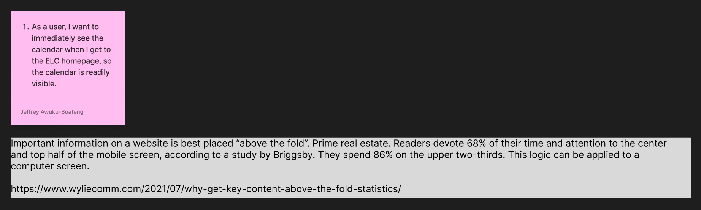
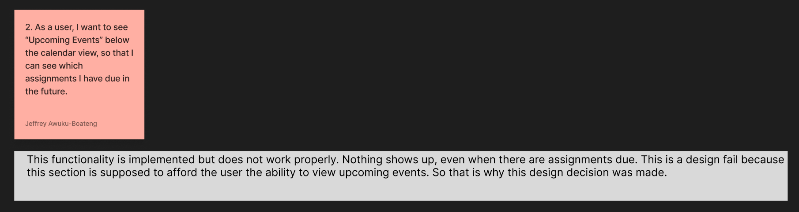

User Stories format: As a type of user, I want some goal so that some
reason.
1)

2)

3)
4)
We discussed which user stories were most relevant to our proposed solution from Milestone 2 and determined that all four user stories were most relevant to our problem and solution.
1) Important information on a website is best placed “above the fold”. Prime real estate. Readers
devote 68% of their time and attention to the center and top half of the mobile screen,
according to a study by Briggsby. They spend 86% on the upper two-thirds. This logic can be
applied to a computer screen.
For each of the relevant user stories we identified and justified in part A, we generated numerous ideas for alternate design solutions using Figma.
For each relevant user story, we produced low-fidelity wireframes for our top ideas.
1)
2)
3)
4)
Using the user stories from part A and the design alternatives from part B, we produced a higher fidelity mockup of the wireframes.
1) We decided to use 1b, because it makes the best use of the total space on screen, while
placing the contents of the calendar widget above the fold, and requires less clicks than
1a.
Credits at wyliecomm.com
and optimonk.com
2) We decided to use 2a, because with this option, users have a choice of using a dropdown arrow, which the user can toggle themselves whether they want to see the upcoming events or not.
3) In 3a, a red dot signifies an assesment (quiz, test) and a blue dot signifies assignments (homework, projects, discussion posts). 3a provides the user more information about which types of events to prepare for compared to 3b, where a highlighted day could mean either an assesment or an assignment.
4) We chose 4a. because includeing colorblind options would ensure the accessibility of this feature for those with colorblind conditions.
Credits:
Milestone 3 requirements found here.
Homepage: Shea Tipton
Section A: Dev Patel, Jeffrey Awuku-Boateng, Obi Nnaduruaku, Shea Tipton
Section B:
Section C:
Section D: Dev Patel, Jeffrey Awuku-Boateng, Obi Nnaduruaku, Shea Tipton